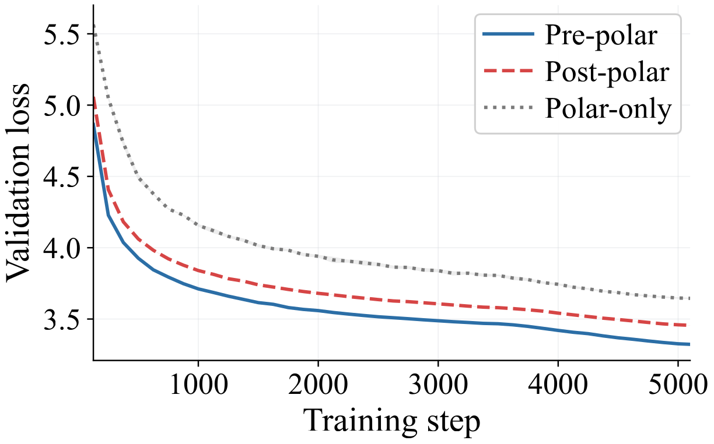
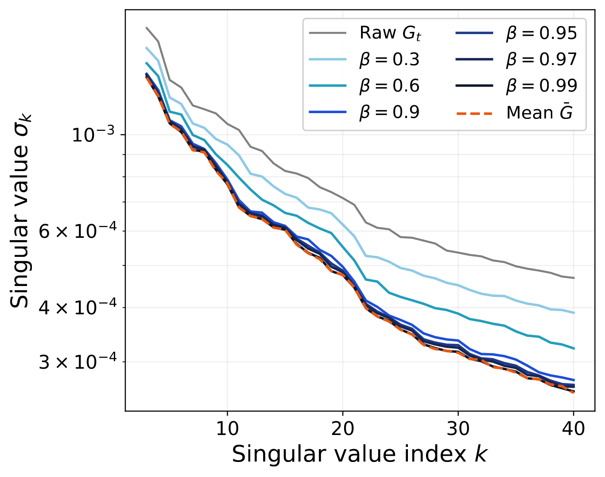
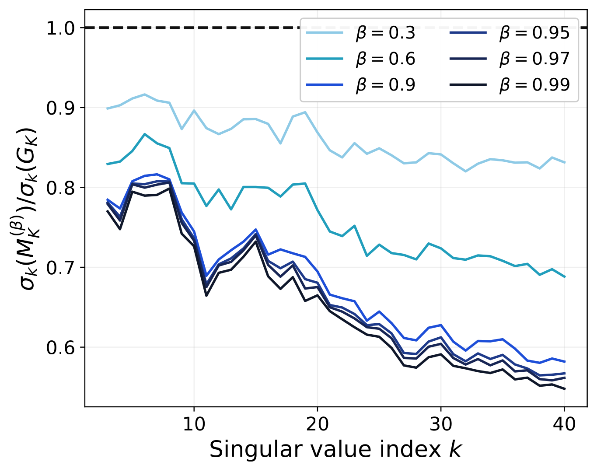
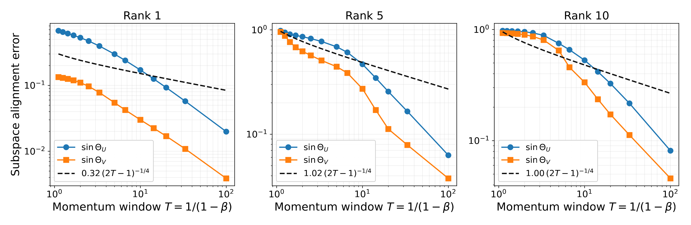
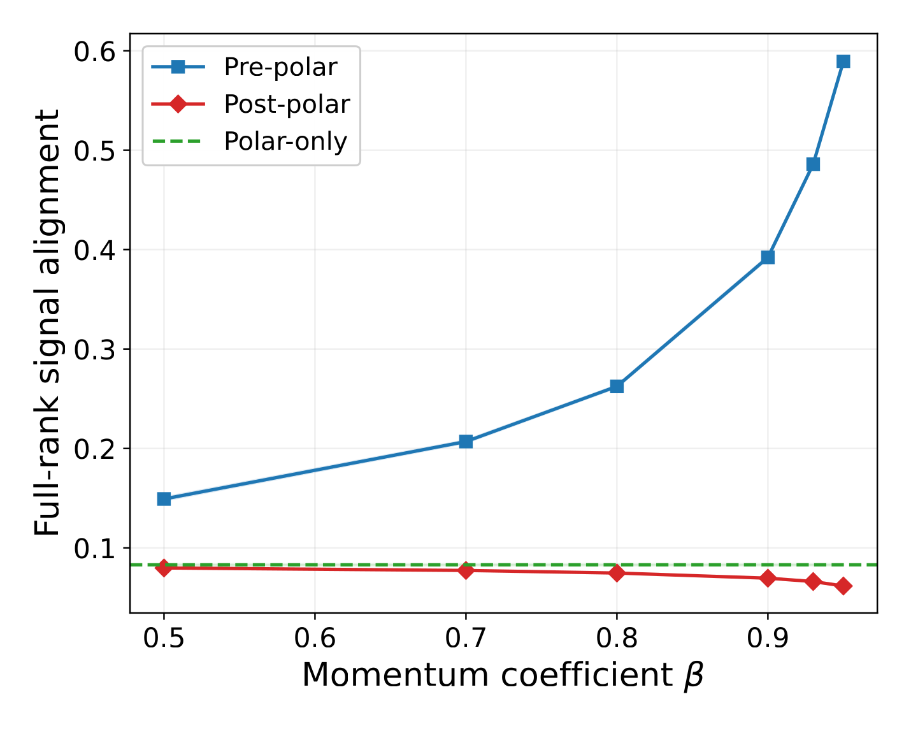

Denoise First, Orthogonalize Later
Understanding Momentum in Muon via Spectral Filtering
The interactive widget below reproduces the synthetic spiked-MDS gradient experiment (paper Figure 7). Drag β to watch the momentum spectrum (blue) lock onto the planted signal (black diamonds) while the noise tail collapses — exactly the spectral gap predicted by Theorem 1.
Synthetic generator: rank-$r$ planted signal $G^{\text{sig}} = U \,\text{diag}(\lambda)\, V^\top \in \mathbb{R}^{100\times 100}$ plus an ARCH(1)-style martingale-difference perturbation $\Xi_t$ at scale $\sigma$. Gradient buffer $K = 1000$, mean over 10 trials. Planted singular values $\lambda$ depend on the rank toggle: $r{=}1 \to [12]$; $r{=}3 \to [12, 8, 5]$ (the paper's synthetic baseline, Figure 7); $r{=}5 \to [12, 10, 8, 6, 4]$; $r{=}10$ and $r{=}15$ use integer / half-integer linear decay from 12 to 3 / 5 respectively (stress tests for higher-rank signals). β is capped at $0.995$ so that $\beta^{K}$ stays small and the momentum buffer is in its post-transient regime (Assumption 2). The widget uses precomputed grids — slider response is bounded by browser repaint, not by computation.
The interactive widget extends the paper's synthetic rank-3 spiked ARCH-MDS experiment (Figure 7) to a continuous sweep over $(\beta, \sigma, r)$; at the $(r=3, \sigma=1, \beta\!\le\! 0.99)$ reference grid, widget numerics match the paper to within trial variance.
The question Muon raises
Muon orthogonalizes a momentum buffer; Orthogonal-SGDM orthogonalizes each per-step gradient and then averages. Empirically, Muon wins on language-model pretraining. Why does the order matter? Let $G_t \in \mathbb{R}^{m\times n}$ be the gradient, $M_t = \beta M_{t-1} + (1-\beta)G_t$ the momentum buffer, and $\mathcal{O}(X) = UV^\top$ the polar factor of the SVD $X = U\Sigma V^\top$. Three pipelines combine the same two operations differently:
The end-to-end loss curves on NanoGPT and LLaMA 350M show a clean separation that persists for the entire training run.


Two consequences. First, momentum and orthogonalization do not commute as numerical operations, so any gap between Pre- and Post-polar comes from the ordering itself. Second, Pre-polar's gap to Polar-only shows that momentum supplies value the polar factor alone cannot recover. Momentum is essential — not cosmetic.
Result 1 · Momentum opens a spectral gap
Decompose the gradient as a coherent rank-$r$ signal plus a martingale-difference perturbation, $G_t = G_t^{\text{sig}} + \Xi_t$, with bounded variance $\mathbb{E}\|\Xi_t\|_F^2 \le \eta$. Let $T = 1/(1-\beta)$ be the effective momentum window. Then the momentum buffer $M_t$ both preserves the signal singular values and attenuates the perturbation tail.
Spectral gap of the momentum buffer.
Under Assumptions 1 and 2, with probability at least $1 - (2T-1)^{-1/2}$, $$ \begin{aligned} \sigma_k(M_t) &\;\ge\; c_{\text{sig}}\lambda_k \;-\; \frac{\sqrt{\eta}}{(2T-1)^{1/4}}, \quad k = 1,\ldots,r, \\[2pt] \sigma_{r+1}(M_t) &\;\le\; \frac{\sqrt{\eta}}{(2T-1)^{1/4}}. \end{aligned} $$
This is the opposite of the convergence-rate story in prior Muon analyses, which deteriorate with heavy momentum. The interactive widget at the top of the page makes this concrete: as you push β toward 1, the blue head locks onto the diamonds while the blue tail crashes toward zero. The next figure shows the same effect on real NanoGPT gradients.

h.0.attn.c_proj, step 3000. As β rises, the momentum spectrum (blue) descends toward the mean-gradient spectrum (orange dashed) — head first, tail later.
The gap $\sigma_r(M_t) - \sigma_{r+1}(M_t)$ scales as $\Theta(1) - O(T^{-1/4})$ — it widens as momentum deepens. This is the opposite of the convergence-rate story in prior Muon analyses, which deteriorate with heavy momentum. The interactive widget at the top makes this concrete: as you push β toward 1, the blue head locks onto the diamonds while the blue tail crashes toward zero.
A direct corollary: the top-$r$ singular subspaces of $M_t$ track those of the planted signal up to a $\sin\Theta$ error of $O(T^{-1/4})$. The polar factor, applied to $M_t$, therefore operates on a matrix whose singular directions are already correct and whose singular values are nearly the planted ones.

Live training: subspace alignment under non-stationarity
The stationary probe holds the model weights fixed. To check the trajectory case, we maintain a sliding $K$-step gradient buffer alongside the optimizer during live NanoGPT training and rerun the analysis on the buffer. The signal subspace now drifts step-by-step.

Result 2 · Pre-polar dominates Post-polar and Polar-only
Theorem 1 explains why momentum helps. It does not yet explain why putting momentum before orthogonalization wins over the reverse. The polar factor preserves singular directions but replaces all singular values with ones, so when it acts directly on a noisy gradient, it erases the amplitude gap between signal and noise. Subsequent averaging cannot recover what was already destroyed.
Pre-polar dominates Post-polar and Polar-only.
For any fixed signal $G^{\text{sig}}$ and any absolutely continuous perturbation, there exists $C > 0$ such that for sufficiently large window $T = 1/(1-\beta)$, $$\mathbb{E}\!\left[\frac{\langle \mathcal{O}(M_t),\, G^{\text{sig}}\rangle_F}{\langle \mathcal{O}(G^{\text{sig}}),\, G^{\text{sig}}\rangle_F}\right] \;\ge\; \max\!\left\{ \mathbb{E}\!\left[\frac{\langle\mathcal{O}(G_t),\, G^{\text{sig}}\rangle_F}{\langle \mathcal{O}(G^{\text{sig}}),\, G^{\text{sig}}\rangle_F}\right],\;\; \mathbb{E}\!\left[\frac{\langle \widetilde{M}_t,\, G^{\text{sig}}\rangle_F}{\langle \mathcal{O}(G^{\text{sig}}),\, G^{\text{sig}}\rangle_F}\right] \right\} + \tfrac{C}{2}.$$
Quantitative separation under the rank-1 spiked Gaussian model.
In the low-SNR regime $\lambda < 0.25\sigma_\Xi(\sqrt{m}-\sqrt{n})$, the Polar-only signal alignment becomes marginal as the matrix size grows relative to $\lambda$ — Polar-only loses the signal entirely. Pre-polar, in contrast, continues to recover the signal as long as the momentum window $T$ is large.
The empirical comparison closely tracks the theory: Pre-polar's signal alignment grows with $\beta$ and dominates both other pipelines, while Polar-only is by construction $\beta$-independent.


Live training: pipeline ordering survives non-stationarity
Same trajectory probe as in Result 1: a $K$-step sliding gradient buffer alongside live NanoGPT training. The model weights — and the signal subspace — drift step-by-step.


Ablations across additional NanoGPT attention/MLP projection layers and training checkpoints, CIFAR-10 stationary and trajectory probes, and heavy-tailed (Student-$t$) and Gaussian-MDS perturbation variants reproduce the same head-versus-tail spectral gap and Pre-polar's dominance over both other pipelines. See the appendix of the paper for the full grid and per-cell variance.
Takeaway: a design rule beyond Muon
The mechanism we identify — denoise first, then orthogonalize — is not specific to Muon's polar factor. Any matrix-aware optimizer that ends in a nonlinear spectral step (sign, polar, projection onto a manifold) faces the same trade-off: a noisy gradient passed through the spectral step loses the amplitude gap between informative and uninformative directions. Recovering it after the fact is much harder than not destroying it in the first place.
For practitioners: use heavy momentum with Muon. For theorists: the spectral-filtering perspective for momentum is a starting point for analyzing other matrix optimizers and for designing new ones with adaptive momentum schedules.